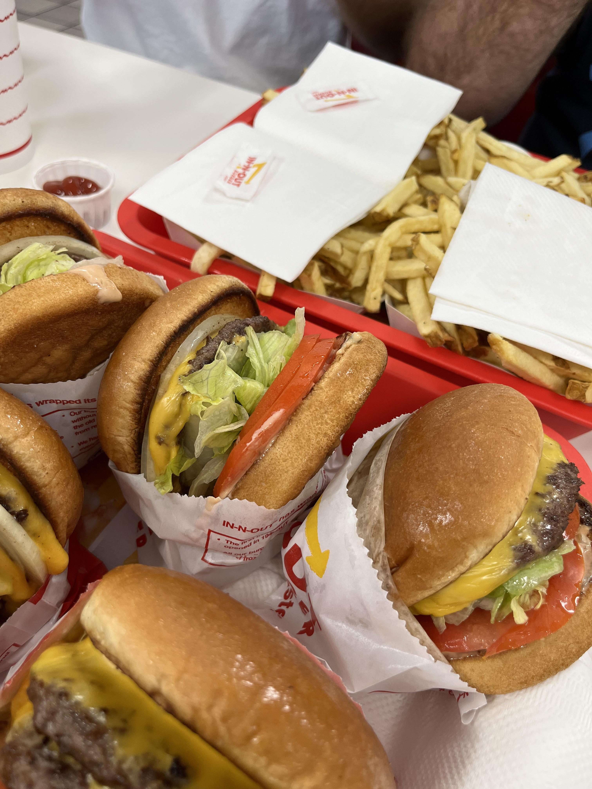

IN - N - OUT
MENU
|  |  |
|---|
 |
 |
 |
 |
|---|
In-N-Out Burgers, doing business as In-N-Out Burger, is an American regional chain of fast food restaurants with locations primarily in California and to a lesser extent the Southwest from Oregon to Texas.[6] It was founded in Baldwin Park, California, in 1948 by Harry (1913–1976) and Esther Snyder (1920–2006). The chain is headquartered in Irvine, California, and has expanded outside Southern California into the rest of California, as well as into Arizona, Nevada, Utah, Texas, Oregon, Colorado, and Idaho, and is planning expansions into New Mexico and Tennessee. The current owner is Lynsi Snyder, the Snyders' only grandchild. As the chain has expanded, it has opened several distribution centers in addition to its original Baldwin Park location. The new facilities, located in Lathrop, California; Phoenix, Arizona; Draper, Utah; Dallas, Texas; and Colorado Springs, Colorado will provide for potential future expansion into other parts of the country. In-N-Out Burger has chosen not to franchise its operations or go public; one reason is the prospect of food quality or customer consistency being compromised by excessively rapid business growth. The In-N-Out restaurant chain has developed a highly loyal customer base and has been rated as one of the top fast food restaurants in several customer satisfaction surveys.